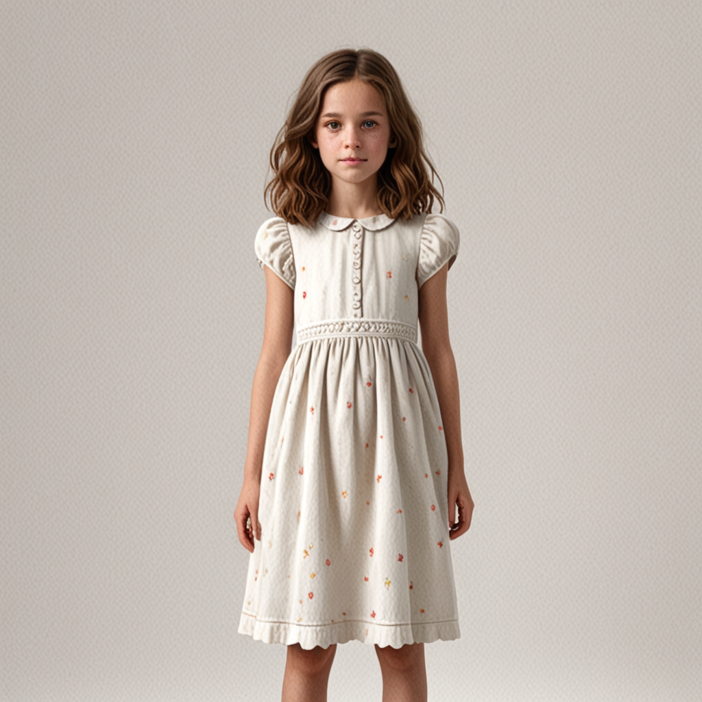

v0 — FRONT photo original
RealVis XL v4.0
1024² · bras collés (pas T-pose)
RealVis XL v4.0
1024² · bras collés (pas T-pose)
- Prompt: "jeune fille francaise, robe d'été"
- steps=8, guidance=7.0, seed=1776629428
- Pas de ControlNet, pas d'IPA
problème bras le long du corps → cascade sur tout le pipeline